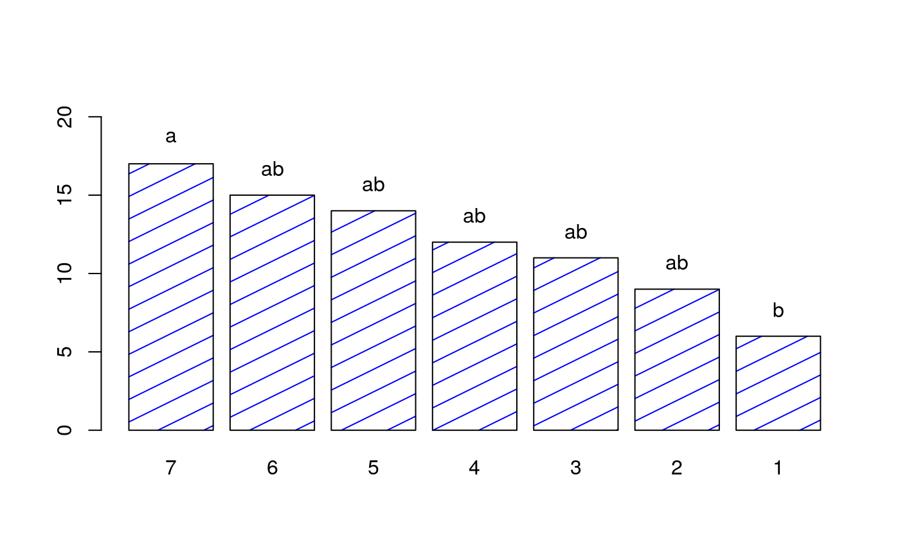

R/BIB.test.R
BIB.test.RdAnalysis of variance BIB and comparison mean adjusted.
BIB.test( block, trt, y, test = c("lsd", "tukey", "duncan", "waller", "snk"), alpha = 0.05, group = TRUE, console = FALSE )
| block | blocks |
|---|---|
| trt | Treatment |
| y | Response |
| test | Comparison treatments |
| alpha | Significant test |
| group | logical |
| console | logical, print output |
Design parameters
Statistics of the model
Comparison between treatments
Adjusted mean and statistics summary
Grouping of treatments
Test of comparison treatment. lsd: Least significant difference. tukey: Honestly significant differente. duncan: Duncan's new multiple range test waller: Waller-Duncan test. snk: Student-Newman-Keuls (SNK)
Design of Experiments. Robert O. Kuehl. 2nd ed., Duxbury, 2000 Linear Estimation and Design of Experiments. D.D. Joshi. WILEY EASTERN LIMITED 1987, New Delhi, India. Introduction to experimental statistics. Ching Chun Li McGraw - Hill Book Company, Inc. New York. 1964
DAU.test, duncan.test,
durbin.test, friedman, HSD.test,
kruskal, LSD.test, Median.test,
PBIB.test, REGW.test,
scheffe.test, SNK.test,
waerden.test, waller.test,
plot.group
library(agricolae) # Example Design of Experiments. Robert O. Kuehl. 2da. Edicion. 2001 run<-gl(10,3) psi<-c(250,325,475,250,475,550,325,400,550,400,475,550,325,475,550, 250,400,475,250,325,400,250,400,550,250,325,550,325,400,475) monovinyl<-c(16,18,32,19,46,45,26,39,61,21,35,55,19,47,48,20,33,31,13,13,34,21, 30,52,24,10,50,24,31,37) out<-BIB.test(run,psi,monovinyl,test="waller",group=FALSE)#> Error in eval(predvars, data, env): object 'monovinyl' not foundprint(out)#> Error in print(out): object 'out' not found#> Error in bar.err(out$means, variation = "range", ylim = c(0, 60), bar = FALSE, col = 0): object 'out' not foundout<-BIB.test(run,psi,monovinyl,test="waller",group=TRUE)#> Error in eval(predvars, data, env): object 'monovinyl' not foundout<-BIB.test(run,psi,monovinyl,test="tukey",group=TRUE,console=TRUE)#> Error in eval(predvars, data, env): object 'monovinyl' not foundout<-BIB.test(run,psi,monovinyl,test="tukey",group=FALSE,console=TRUE)#> Error in eval(predvars, data, env): object 'monovinyl' not found#> Warning: object 'out' not found# Example linear estimation and design of experiments. D.D. Joshi. 1987 # Professor of Statistics, Institute of Social Sciences Agra, India # 6 varieties of wheat crop in a BIB whit 10 blocks of 3 plots each. y <-c(69,77,72,63,70,54,65,65,57,59,50,45,68,75,59,38,60,60,62, 55,54,65,62,65,61,39,54,67,63,56) varieties<-gl(6,5) block <- c(1,2,3,4,5,1,2,6,7,8,1,3,6,9,10,2,4,7,9,10,3,5,7,8,9,4,5,6,8,10) BIB.test(block, varieties, y) # Example Introduction to experimental statistics. Ching Chun Li. 1964 # pag. 395 table. 27.2 # 7 trt, k=3 and b=7. y <-c(10,15,11,4,12,15,5,14,10,14,19,19,8,10,17,6,11,12,5,14,21) block<-gl(7,3) trt <- c(1,2,4,2,3,5,3,4,6,4,5,7,1,5,6,2,6,7,1,3,7) out<-BIB.test(block, trt, y, test="duncan") bar.group(out$groups,col="blue",density=4,ylim=c(0,max(y)))